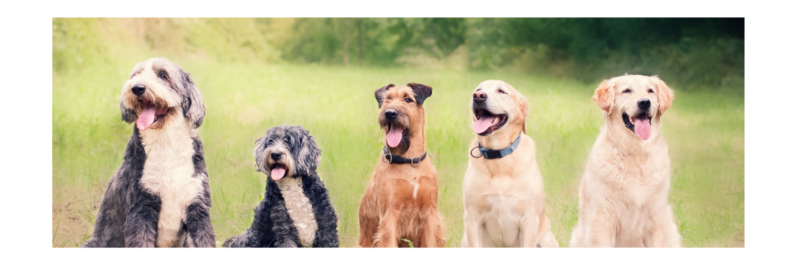

BR Architects
Benefits of having a dog

- Life is better with dogs
Nothing beats a long walk with your four-legged friend on a fresh, spring morning. Or seeing the joy on their faces when you pick up a ball and they know it's playtime in the local park! Even relaxing at home feels better in each other's company.
There's an old saying, which is certainly true, that dogs repay the love you give them ten-fold. Before you rush out and adopt a dog, it's important to think it through very thoroughly. Caring for a dog can be hard work and it's a lifetime commitment,
as your dog will be relying on you for many years to come. Once you're sure you have the time and lifestyle to include a dog in your life, and you've done your research about different dog breeds and personalities it's time to look at all the benefits of owning a dog.
- Having a dog can help you stay active
One of the key benefits of having a dog is that they significantly increase the amount of exercise you do on a regular basis - and you might not even notice it! While it can be difficult to motivate ourselves to go for a walk alone, when we know our puppy needs exercise,
we often don't think twice. All those strolls through the park and adventures in the wood add up.
Even playing games with your dog counts as exercise. You've probably noticed how tired you feel after a long game of 'fetch', even though your
dog is the one who's been running around. One of the biggest benefits of dogs is the way they encourage you to be more active, which supports your health as well as theirs.
- Having a dog is a great way to meet new people
One of the unexpected benefits of dogs is the way they add to your social life. Going to obedience classes, saying 'hello' to other dog walkers when you go to the park with your canine companion - there are dozens of ways in which your dog makes you more sociable. Your
new puppy will get you out and about, trying things you never considered before and introducing you to new experiences. Whether you're going to a new pet shop or exploring a new area to make your dog's daily walk more interesting, you're bound to see new people all the time.
You're unlikely to stop for a chat with a stranger when you're walking by yourself, but we all know how easy it is to talk when our dogs want to make friends. And, no matter how different we are, we have something in common - our highly sociable, friendly dogs!.
- Dogs are great for your blood pressure
ne of the most fascinating benefits of dogs is their amazing ability to make us feel calm - and that has a brilliant effect on our health. According to Harvard University, studies have shown that dog owners have lower blood pressure which is both due to the increase in
exercise and that blood pressure goes down when you merely pet your pooch. It may surprise you to learn that our blood pressure actually has a big effect on our wellbeing too, so next time you feel stressed, or just need some time to relax, give your dog some TLC - you'll both feel the benefit!.
- Dogs are brilliant companions
One of the most noticeable benefits of owning a dog is that it's almost impossible to feel lonely when your dog is by your side, and for good reason. Most dogs are highly sociable, and they love company, whether it's canine or human. When your puppy enthusiastically greets you after a day at work, or
looks forward to being taken on their favourite walk, you know you always have a friend by your side.
- Dogs teach us valuable skills
Dog owners know that training requires time, effort and patience - all things that are useful in other aspects of our lives. But that isn't the only thing having a dog teaches us. From enjoying the great outdoors to appreciating the smaller things in life, our dogs really know how to lead by example
when it comes to happiness. Dogs and children are also an excellent match as they can teach them a lot about responsibility. Try making your child responsible for a certain aspect of your dog's day - such as feeding them in the evening or brushing them at night (oversee everything yourself, though!) - and you'll be
encouraging valuable life skills that can't be learned anywhere else.
- Additional benefits of having a dog
- Dog owners generally have a stronger immune system, helping them to stay well and spend less time getting over sickness and bugs. In fact, dog owners visit the doctor less often than non-dog owners, and are less likely to be on medication.
- People recover faster from illnesses and even have higher survival rates after a heart attack if they have a dog.
- Children who have a furry friend have fewer days off school due to sickness.
- Children with chronic illnesses often cope better with treatment when they have a canine companion.
- Dogs provide us with a sense of emotional wellbeing thanks to the unconditional love they give, which is why they're also great company and comfort for people who live alone.
- Owning a dog can help people to recover from personal trauma, such as bereavement.
- Dog ownership can help those with mental health problems to recover and feel better.